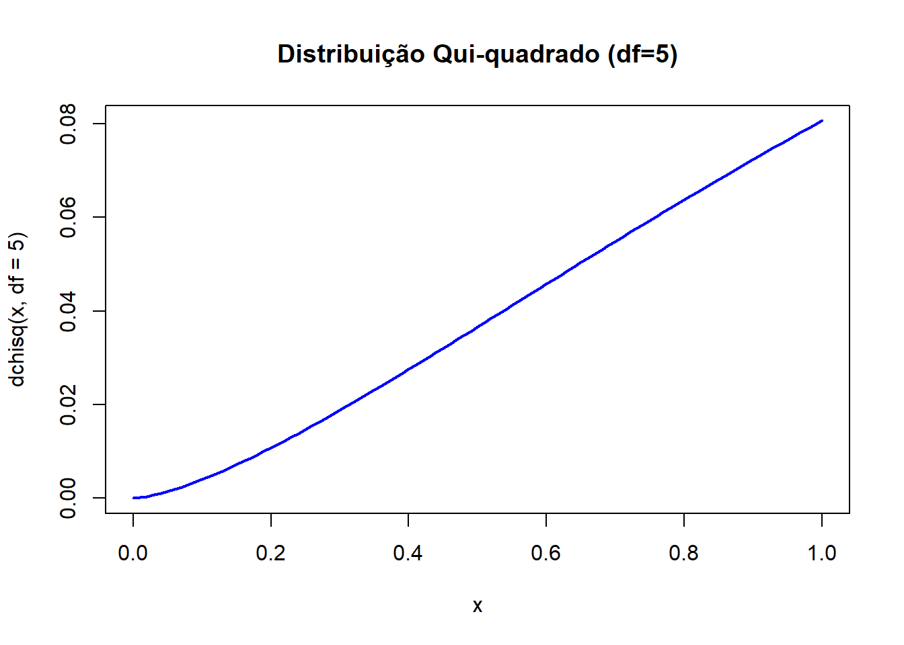
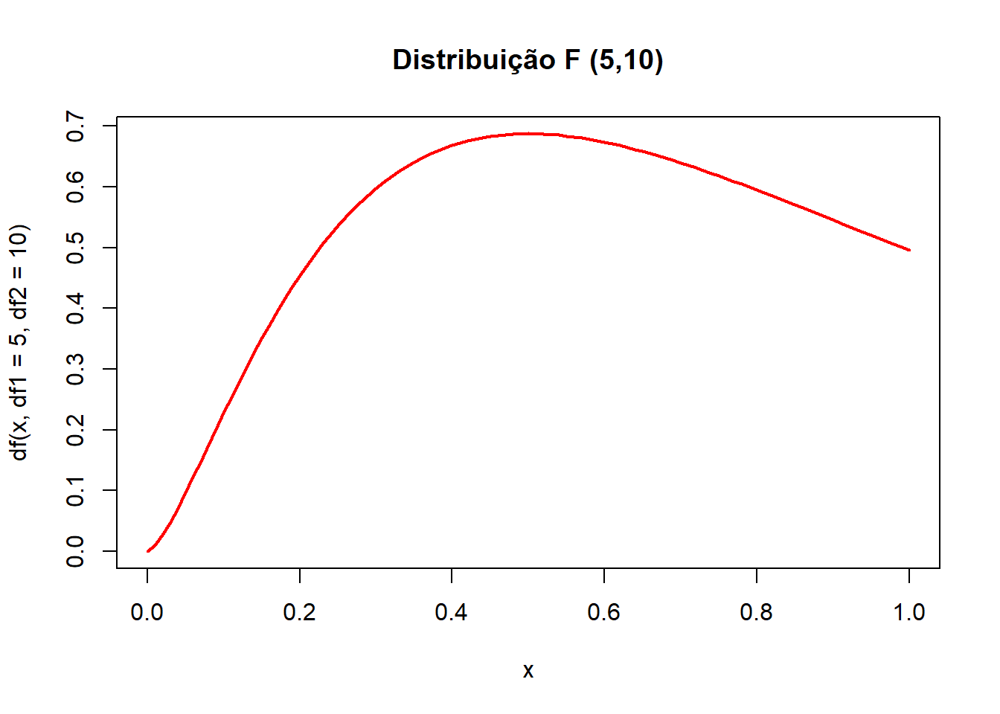

Código
x <- seq(0, 30, 0.1)
curve(dchisq(x, df=5), col="blue", lwd=2, main="Distribuição Qui-quadrado (df=5)")


Estatística e Probabilidade
Prof. Ben Dêivide (DEFIM/CAP/UFSJ)
As distribuições de probabilidade desempenham papel central na estatística inferencial, permitindo a construção de testes de hipóteses e intervalos de confiança. Entre elas, destacam-se a Distribuição Qui-quadrado e a Distribuição F, ambas relacionadas a funções de variáveis aleatórias normais e amplamente utilizadas em análises amostrais.
A distribuição Qui-quadrado surge naturalmente como soma dos quadrados de variáveis normais padronizadas independentes, sendo fundamental em testes de aderência, independência e ajuste de modelos. Já a distribuição F resulta da razão entre duas variâncias amostrais independentes, cada uma associada a uma distribuição Qui-quadrado, e é essencial em testes de comparação de variâncias e na análise de variância (ANOVA).
Na área de Engenharia de Telecomunicações, essas distribuições são aplicadas em problemas de confiabilidade de sistemas, análise de ruído, modelagem de tráfego e testes de desempenho de equipamentos. Assim, compreender suas propriedades e aplicações é indispensável para análises estatísticas robustas.
Discorrer sobre as distribuições F e Qui-quadrado, destacando suas propriedades, relações com distribuições amostrais e aplicações práticas na Engenharia de Telecomunicações.
\[ X = \sum_{i=1}^k Z_i^2 \sim \chi^2(k) \]
\[ F = \frac{U/n_1}{V/n_2} \sim F(n_1, n_2) \]
x <- seq(0, 30, 0.1)
curve(dchisq(x, df=5), col="blue", lwd=2, main="Distribuição Qui-quadrado (df=5)")
###Simulação da F
x <- seq(0, 5, 0.01)
curve(df(x, df1=5, df2=10), col="red", lwd=2, main="Distribuição F (5,10)")
A Qui-quadrado está diretamente ligada à variabilidade amostral e é usada em testes de ajuste e independência.
A F é fundamental em ANOVA, permitindo verificar se diferentes grupos possuem variâncias semelhantes.
Em Engenharia de Telecomunicações, essas distribuições são aplicadas em análise de ruído, confiabilidade de sistemas e testes de desempenho de equipamentos.
As referências devem ser inseridas no arquivo referencias.bib e chamadas no texto da seguinte forma:
As distribuições Qui-quadrado e F são fundamentais na estatística aplicada, pois permitem avaliar variabilidade e realizar testes de hipóteses em diferentes contextos.
Na prática, elas surgem naturalmente de funções amostrais relacionadas a variáveis normais: a Qui-quadrado como soma de quadrados e a F como razão de variâncias.
Na Engenharia de Telecomunicações, essas distribuições são aplicadas em problemas de confiabilidade, análise de ruído e desempenho de sistemas, mostrando sua relevância para a área.
Conclui-se que o domínio dessas distribuições é essencial para análises estatísticas robustas e para a tomada de decisão baseada em dados.